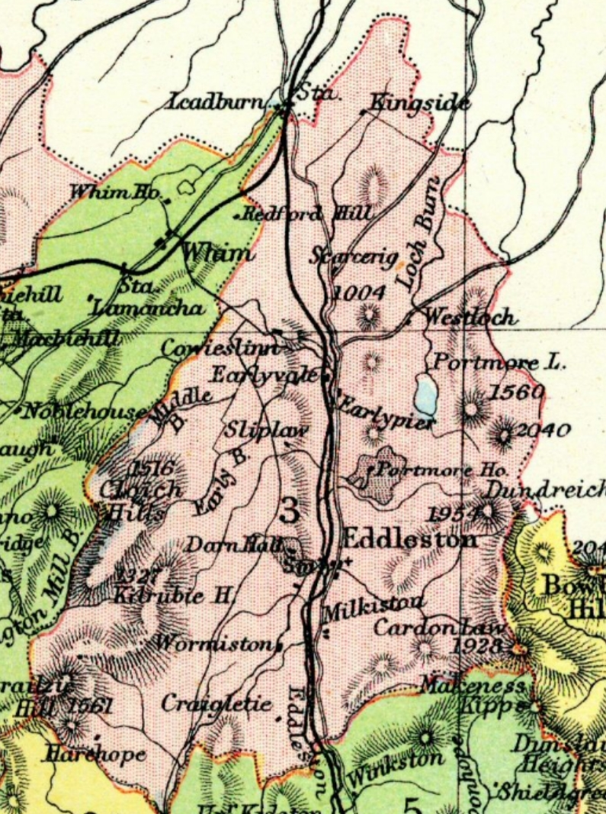

|
Veitch
Index
Veitch Family Lineages
Veitch of Kingside
Eddleston Parish, Peeblesshire
William Vaiche of Kinsyd. Held
lands of Glenrusco in the barony of Oliver Castle Peeblesshire.
The barony of Oliver Castle was originally granted to the Fraser
family, then inherited by the Flemings of Biggar and the Hays
of Yester.
Children:
1(i). Gavin/Gawine Vaiche son of William Vaiche of
Kinsyd. Inherited lands at Glenrusco. Died before 1532.
3rd Feb. 1501/2 253.. Reversion by Gavin Vaich, son and
heir of Wm. Vaich of Kingsyd, following on No. 252, Glenrusco,
3 Feb. 1501 : Witnesses, Bernard Vaich, son and heir of Alex.
V. of Dawik, Ninian Patersoun of Caverhil, John Geddes, and John
Thomesoun. {H.) Seal appended in good condition. - Calendar of
Writs Preserved at Yester House.
Children:
2(i). William Vaiche named heir of his father Gavin
Vaiche held lands at Glenrusco by virtue of his grandfather William
Vaiche of Kinsyd.
9th Oct. 1532. 494. Precept of Clare Constat by John Lord
Hay of Zestir baron of Olivercastel directed to John Broune and
Matthew Ranuyk in favour of William Vaiche as heir of his father
um. Gawin V. , son of Wm Vaiche of Kinsyd in the half of the
lands of Glenrusco in the barony of Olivercastle Peebleshire,
held in chief of said Lord, security to be taken for L18 due:
Town of Neidpeth 9 Oct 1532: Witnesses Andrew Hay, Thos Portus
and Sir John mandirstoune chaplain and N.P. - Calendar of Writs
Preserved at Yester House.
William Veitch of Kingsyde held
the lands of Hammyltoun, Haggen, brewland in town of Lyne and
40s land of Glenrusco Peebleshire. He died prior to 1595
Children:
1(i). Alexander Vaitche in Hammyltoun named lawful
heir of his father William Veitch of Kingsyde in 1595. Inherited
lands of Hammyltoun, the lands of Haggen, a brewland in the town
and territory of Lyne, and his 40 shilling land of Glenrusco,
Peeblesshire; He died prior to 1606
1590 Caution by Alexander, Lord Hume, and Hew, Lord Somervile,
for James Twedy of Drummelzeair in 5000 rnerks, for Adam Tuedy
of Dreva ia caution for£2000, for Williame Tuedy of the
Wra in 2000 merks, for Johnne Creich- Tweedie of toun of Quarter
and Thomas Porteous of Glenkirk in 1000 merks each, and his friends,and
for Andro Crechtoun of Cordon in 500 merks, that Williame Veche
of Dawik, Williame Veche, his son, George Veche, brother to the
said Williame Veche of Dawik, James Veche in Curop, Adam Veche
in Feythen, Alexander Veche, his brother, Alexander Veche in
Hammiltoun, Alexander Veche in Peblis, Eobert Veche, son of Walter
Veche in Syntoun, Johnne Veche in Clerkland, and Johnne Veche,
son of the said Walter Veche in Syntoun, shall be harmless of
the said persons.
married ___________
Children:
2(i). John Vaitche of Hammyltoun named heir of his
father Alexander Vaitch of Hammyltoun in 1606. Inherited lands
at Hammiltoun, Haggan with an oxgate of land called the Brewland,
lying in the town and territory of Lyne, and 40s. land of Glenrusco
lying in the shire of Peebles.
1614 "Chargeis aganis Johnne and Andro Vetcheis, sonis
to umquhile [deceased] Alexander Vetche in Hamilton, to compeer
this day aucht dayis"
2(ii). Andrew Vetche, named as son in 1614
1614 "Chargeis aganis Johnne and Andro Vetcheis, sonis
to umquhile [deceased] Alexander Vetche in Hamilton, to compeer
this day aucht dayis"
2(iii). James Veitch, named son of late Alexander Veitch
in Hamilton in 1609 apprenticeship.
1609 May 3 Edinburgh Apprentices - James Veitch son to
late Alexander Veitch in Hamilton with Thomas Todrig, skinner
1(ii). James Veitch of Courhope and Stewartoun See Veitch of Stewartoun
1(iii). Andrew Veitch of Courhope and Stewartoun
See Veitch of Stewartoun
William Veitch of Kingside.
He was a parishioner of Stobo Church, Peebleshire. He is alive
at 1612.
1603, December 8. Stobo Parish Church, Peebleshire. William
Veiche of Kingsyde and William Tuedy, parishioners of Stobo,
being called and not compelling, the matter is continued till
their Minister's presence. 1604, January 19. William Veitche
of Kiugsyde compeared, and after grave admonitions, intimated
to him, is referred to his own Minister with certification that
if he forbear not intemperance and other misbehaviour, his humiliation
shall be deemed hypocrisy and himself delated to the Secret Council
as a person very unruly.1604, February 16. Reported by the Minister
of Stobo that William Veiche of Kingsyde had in some measure
humbled himself, and given signs of repentance. Whereupon he
being called compeared, was gravely admonished and continued
till the next day, that farther trial may be had that he dealt
sincerely, with signification that if ,either he be found given
to excessive drinking or otherwise haunting the company of the
woman with whom he had to do, or otherwise misbehaving himself,
he shall be excommunicated and incur other penalties as shall
be enjoined hereafter. Compeared William Veitche of Kingsyde,
as he was warned, and promised and obliged himself to adhere
to his wife, to satisfy the Kirk as shall be enjoined, and shall
abstain from all company and society of the woman he had ado
with; and otherwise to behave himself temperately and honestly,
in all time coming, but especially to eschew all kinds of immorality
under the pain of five hundred merks, condescended upon by himself
to be uplifted without contradiction, as his own handwrit bears
in token of consent. Wm. Veitch of Kingsyde.
1612 Letters of Complaint by William Veitcbe, younger,
son of William Veitche in Kinsyde, and by said William Veitche,
elder, as administrator and governor to his said son, that Alexander
Hunter. merchant burgess of Edinburgh, fulfilment of Rebecca
Broun, his spouse, Thomas Hunter, his brother, and Bessie Hendersoun,
spouse of said Thomas, remain unrelaxed from a horning of 22nd
January last for not fulfilling a contract made between complainers
and them, and especially for " not payment to him of the
yeirlie tak dewtie of tua hundreth merkis restand awand unpayit
of the yeiris and termes bygane sen the dait of the said contract,
quhilk beiris dait the xx v and xxvi dayis of August 1607 yeiris,"
besides £100 of expenses-The elder Veitch appearing personally
for himself and his son, decree as above against defenders for
not appearing. Register of the Council
Married Katherine Todhunter. Spouse of William Veitch
of Kingside. She died prior to 1603
Children:
1(i). William Veitch. He was heir of his mother, spouse
of William Veitch of Kingside in 1603
1603 June 21 Retours of Services of Heirs 1544-1699 Vol
A - Willielmus Veitch - haeres Katherinea Todhuntar sponsae Willielmi
Veitch de Kingside, matris, - in tertia parte terrae in burgo
de Edinburgh: E. 10m - Tertia parte terrae sive domorum in warrantum.
29th May 1618. 1204. Precept of Clare Constat by Mr. Alexander
Greig, minister of the Word of God at Drummalzear and perpetual
vicar of the parish Kirk of Stobo, for infefting William Veache,
now of Kingsyd, as lawful and nearest heir of the late William
Veache of Kingsyd, his grandfather, in the 40s. lands of Wester
Hopprew, lying in the barony of Hopprew and shire of Peables.
(Written by James Toischeache, servitor to Arthur Ray, writer
in Edinburgh.) Dated at Stobo 29th May 1618. Witnesses, Alexander
Vaitche, brother german to William Vaitche of Dawick, Andrew
Vaitche, portioner of Stewartoun, and James Russell in Stobo.
Signed. - Calendar of Writs Preserved at Yester House.
 Map of Eddleston Parish, Peeblesshire, and the location
of Veitch lands at Kingside
Philips' Handy Atlas of the Counties of
Scotland", constructed by John Bartholemew, F.R.G.S., and
publisned by George Philip & Son, Ltd. in 1886.
Abstracted Records for Veitch of Kingside,
Peebleshire
27th Janry. 1501/2. 252. Charter by John Lord Hay of Zester,
Sheriff of Peebles, and baron of Oliveriscastel To Gavin Vaich,
son of Wm. Vaich of Kingsyd, of his half of the lands of Glenrusco
in the barony of Oliveriscastel, resigned in favour of the said
Gavin by the said Wm. Vaich, who had bought them for /40 from
um. Sir David Hay of Zester, knt., the granter's father : Paying
yearly 20 pence in name of blanche-firm if asked : Under Reversion
for £i,o to be paid by the said Lord Hay or his heirs on
the High Altar of the Kirk of Dawik : At our town of Nedpeith.
27 Jan. 1501 : Witnesses, Wm. Cokburne of Henderland, Wm. Hay
of Tallo, Ninian Patersoun of Caverhil, Jas. Singcler, Symon
Geddas, and John Quhippow. {H.) - Calendar of Writs Preserved
at Yester House.
3rd Feb. 1501/2 253.. Reversion by Gavin Vaich, son and heir
of Wm. Vaich of Kingsyd, following on No. 252, Glenrusco, 3 Feb.
1501 : Witnesses, Bernard Vaich, son and heir of Alex. V. of
Dawik, Ninian Patersoun of Caverhil, John Geddes, and John Thomesoun.
{H.) Seal appended in good condition. - Calendar of Writs
Preserved at Yester House.
Oct 1501 the protest of William Vaiche of Kingiside, who appeared
at the Tolbooth for trial before the King's Justiciar for the
murder of Guido Ewart.^ Neither the Justiciar, his deputy, nor
the prosecutors being present, Vaiche took instruments that he
had appeared and that his caution, John Murray of AtUekliill,
should be free of his caution.
9th Oct. 1532. 494. Precept of Clare Constat by John Lord
Hay of Zestir baron of Olivercastel directed to John Broune and
Matthew Ranuyk in favour of William Vaiche as heir of his father
um. Gawin V. , son of Wm Vaiche of Kinsyd in the half of the
lands of Glenrusco in the barony of Olivercastle Peebleshire,
held in chief of said Lord, security to be taken for L18 due:
Town of Neidpeth 9 Oct 1532: Witnesses Andrew Hay, Thos Portus
and Sir John mandirstoune chaplain and N.P. - Calendar of
Writs Preserved at Yester House.
16th June 1595. 937. Reversion by Alex. Vaitche in Hammyltoun,
son lawful to um. Wm. V. of Kingsyde, for the sum of 1300 (merks),
following on a contract dated 5 June 1595 and a charter by James
Lord Hay of Zester, with consent of Mark Lord of Newbottill,
his father-in-law, sole surviving interdicter of the said Lord's
lands of Hammyltoun, the lands of Haggen, a brewland in the town
and territory of Lyne, and his 40 shilling land of Glenrusco,
Peeblesshire; Bothanis, 16 June 1595; witnesses, John Kar, rainister
of Goddis worde at the kirk of Lyne, Wm. Twedie, John Home, servitors
to the said las. Lord Hay, and Jas. Gray, N.P. {H.) - Calendar
of Writs Preserved at Yester House.
1603, December 8. Stobo Parish Church, Peebleshire. William
Veiche of Kingsyde and William Tuedy, parishioners of Stobo,
being called and not compelling, the matter is continued till
their Minister's presence. 1604, January 19. William Veitche
of Kiugsyde compeared, and after grave admonitions, intimated
to him, is referred to his own Minister with certification that
if he forbear not intemperance and other misbehaviour, his humiliation
shall be deemed hypocrisy and himself delated to the Secret Council
as a person very unruly.1604, February 16. Reported by the Minister
of Stobo that William Veiche of Kingsyde had in some measure
humbled himself, and given signs of repentance. Whereupon he
being called compeared, was gravely admonished and continued
till the next day, that farther trial may be had that he dealt
sincerely, with signification that if ,either he be found given
to excessive drinking or otherwise haunting the company of the
woman with whom he had to do, or otherwise misbehaving himself,
he shall be excommunicated and incur other penalties as shall
be enjoined hereafter. Compeared William Veitche of Kingsyde,
as he was warned, and promised and obliged himself to adhere
to his wife, to satisfy the Kirk as shall be enjoined, and shall
abstain from all company and society of the woman he had ado
with; and otherwise to behave himself temperately and honestly,
in all time coming, but especially to eschew all kinds of immorality
under the pain of five hundred merks, condescended upon by himself
to be uplifted without contradiction, as his own handwrit bears
in token of consent. Wm. Veitch of Kingsyde.
9th June 1606. 1035. Precept of Clare Constat by James Lord
Hay of Yester directed to Robert Broun in Edstoun, bailie, for
infefting Johne Vaiche, now in Hammiltoun, as lawful son and
nearest heir to the late Alexander Vaiche in Hammiltoun, his
father, in the lands of Hammiltoun, Haggan with an oxgate of
land called the Brewland, lying in the town and territory of
Lyne, and 40s. land of Glenrusco lying in the shire of Peebles.
To be held of the granter for payment of one penny yearly if
asked. (Written by John Tuedie, clerk of the burgh of Peebles.).
At Bothanis 9 June 1606. Witnesses, Mr. George Butlar, John Ker
and William Geddes, servitors to the granter. (Sig. cut out.)
Note. July 1606. Sasine given by the bailie before Thomas Paterson,
James Huntare in Hairstoun, James Hunter in Polmude. {,M.) -
Calendar of Writs Preserved at Yester House
1610 Complaint by Jonas Hammiltoun of Quotquott, Alexander
Hammiltoun , his brother Johnne Hendiresoun and Andro Thorbrand,
tenants of the said Jonas, as follows: Complainers have been
accused of theft by Johnne of Ramsay of Quhythill, James ad of
Courop, and William Veitch of Kingsyd. Register of the Council
1612 Letters of Complaint by William Veitcbe, younger, son
of William Veitche in Kinsyde, and by said William Veitche, elder,
as administrator and governor to his said son, that Alexander
Hunter. merchant burgess of Edinburgh, fulfilment of Rebecca
Broun, his spouse, Thomas Hunter, his brother, and Bessie Hendersoun,
spouse of said Thomas, remain unrelaxed from a horning of 22nd
January last for not fulfilling a contract made between complainers
and them, and especially for " not payment to him of the
yeirlie tak dewtie of tua hundreth merkis restand awand unpayit
of the yeiris and termes bygane sen the dait of the said contract,
quhilk beiris dait the xx v and xxvi dayis of August 1607 yeiris,"
besides £100 of expenses-The elder Veitch appearing personally
for himself and his son, decree as above against defenders for
not appearing. Register of the Council
1614 The quhilk day Williame Vetche of Dawik, Andro Vetche,
bruther to umquhill [deceased] James Vetche of Steuartoun, and
Williame Vetche of Kingsyde, compeirand personalie befoir the
Counsaill, thay nominat Sir Gedeone Murray of Elibank, knight,
Thesaurair Depute, and Sir Johnne Cokburne of Ormiestoun, Justice
Clerk, as freindis and arbitouris for thame in the submissioun
past betuix thame and Jonas Hamiltoun of Coitquott. And siclike
compeirit personalie the said Jonas, and nominat Thomas, Lord
of Binning, and Sir Alexander Drummond of Medop, as arbitouris
for him in that same submissioun. And the saidis arbitouris acceptit
the submissioun upoun thame, and appointit Fryday nixt to meets
in the Counsalhous of this burgh for ressaveing and beiring of
the pairtyis clames ; quhilkis clames the partyeis promeist to
haif in reddines, and to gif the same in that day."
29th May 1618. 1204. Precept of Clare Constat by Mr. Alexander
Greig, minister of the Word of God at Drummalzear and perpetual
vicar of the parish Kirk of Stobo, for infefting William Veache,
now of Kingsyd, as lawful and nearest heir of the late William
Veache of Kingsyd, his grandfather, in the 40s. lands of Wester
Hopprew, lying in the barony of Hopprew and shire of Peables.
(Written by James Toischeache, servitor to Arthur Ray, writer
in Edinburgh.) Dated at Stobo 29th May 1618. Witnesses, Alexander
Vaitche, brother german to William Vaitche of Dawick, Andrew
Vaitche, portioner of Stewartoun, and James Russell in Stobo.
Signed. - Calendar of Writs Preserved at Yester House.
1663 Deeds Volume 3 - Willaim Veitch in Hamiltoune grantee
bond 4 Mar 8/22
|